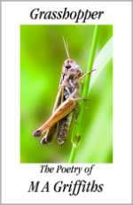

Rude Sonnet Contest Winner: Rosewood I’ve written quite a few ‘rude’ sonnets, and I really think the sonnet is such a versatile form, it can be used for any subject matter.—M. A. Griffiths
Rose here. This spring I found myself in possession of an extra copy of Grasshopper: The Poetry of M. A. Griffiths, and, on a whim, decided to offer it as a prize in a rude sonnet contest. That is, a contest in which the prize would go to the rude sonnet I liked best, not necessarily the rudest sonnet.

Like the Griffiths sonnet, Advice from Mother Goose, “Rosewood,” below, uses extended metaphor to suggest rather than spell things out. (Here is where some annoying person will nod sagely and say, “Ah yes, poetry should never be sexually explicit.” Not true. It depends on the poem, no?) I liked this poem the best of the bunch because it’s clever and playful and joyous. I like “fretboard spine,” “bout of belly,” “cutaway of collarbone,” and the over-the-top alliteration in Line 12.
Congrats to Burt, and thanks to all the other contestants, many of whom submitted fine sonnets. I had fun reading them.
Rosewood
by Burt Myers
She plays, my virtuoso troubadour,
her slender fingers never seem to rest,
and I, just like her cherished old guitar,
come thrumming at her light and sure caress.
She vamps along the cutaway of collarbone,
her drumming heart thumping time with mine,
and sings a gentle “yes” into the hollow,
her fingers spidered down my fretboard spine,
then slings a practiced arm across my waist,
my bout of belly, strumming out our sound,
and I moan low and large, her doghouse bass,
as rich as rosewood, resonant and round.
Our bold crescendo meets a rousing hand.
I say bravo, encore! I love this band.
|